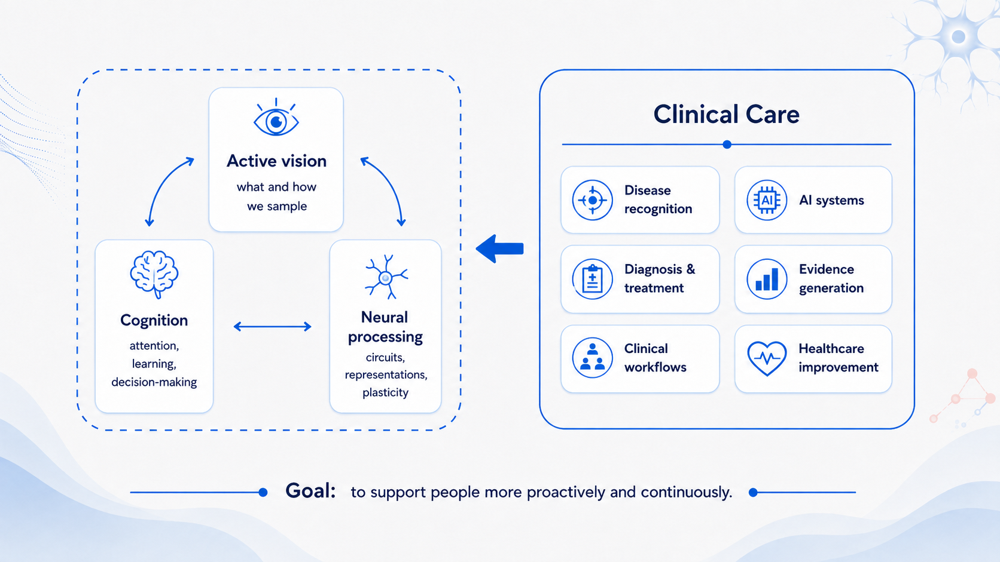
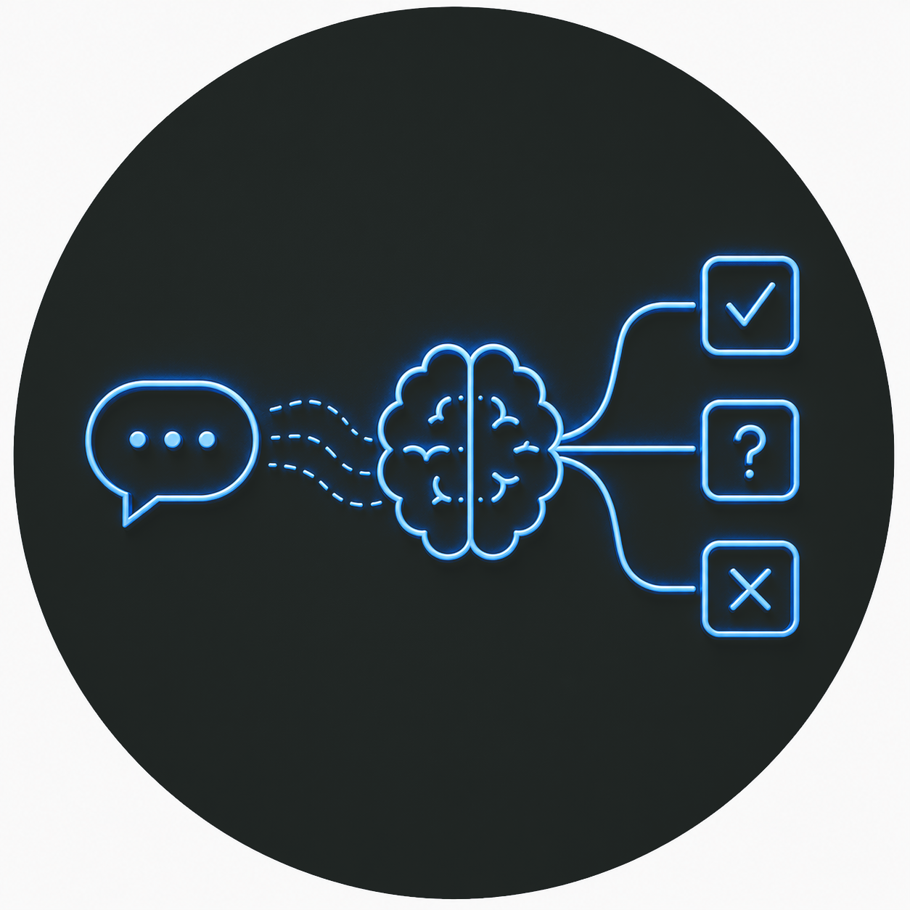
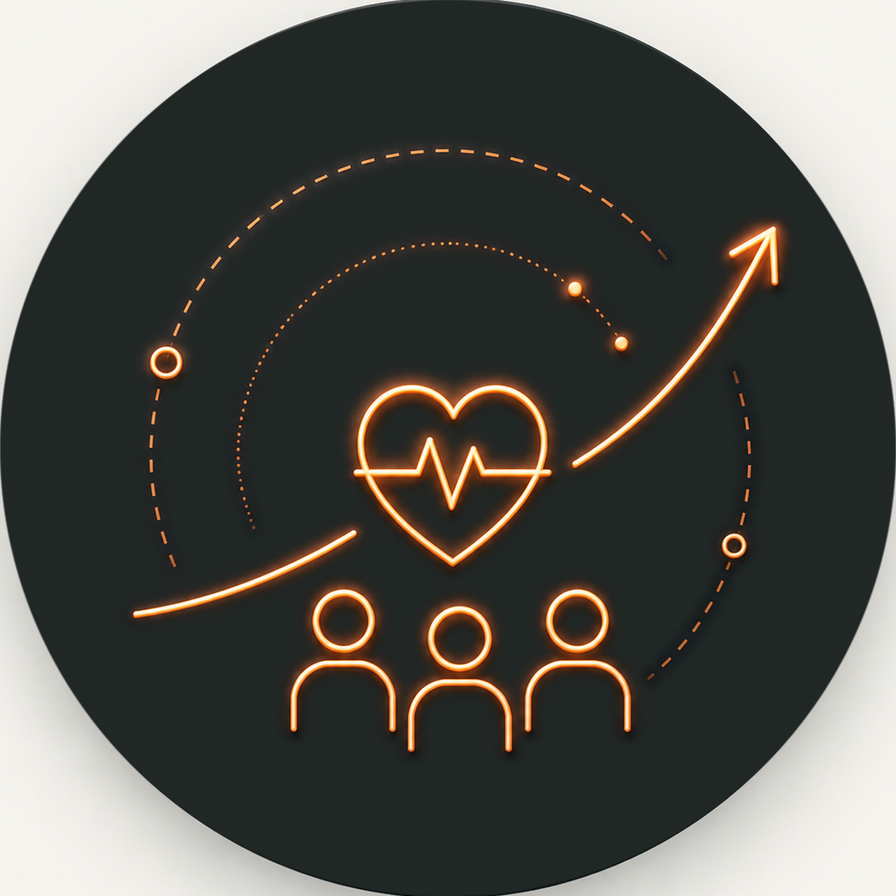

Yunxi Lai
I am a physician-scientist trained in ophthalmology, working at the intersection of clinical research and artificial intelligence, and intrigued by how humans perceive, learn, and act through vision.
- 6 yearsof ophthalmology training
- 3complementary lines of inquiry
- 100K+retrospective blood-test records analyzed
- 1.7M+people reached through an in-house ophthalmic LLM
- 668children in a prospective cohort built from scratch
About
Motivation and research trajectory
One path leads to another
My research began in the clinic. Treating patients made me realize the value of shared effort in the clinician-patient relationship. But there is only so much a doctor can do, even with full commitment.
This led me to explore how each patient could receive the care they need. By analyzing preoperative testing practices in ophthalmology and bridging artificial intelligence (AI) with patient needs and clinical workflows, I work across various methods involving different study designs and data analyses.
Together, we developed an ophthalmic large language model that supports clinical practice, patient care, and medical education through 24/7 question answering, pre-consultation assistance, and history-taking skills training.
One solution opens another question
The more I work with increasingly capable AI systems, the more they bring me back to human beings themselves. The ways people perceive, interpret, and act on information vary, yet they also seem to follow certain patterns.
Much of this unfolds through vision: how visual information is selected, interpreted, and transformed into learning, decisions, actions, and adaptation.
I am intrigued by the human mind, the role of the visual system in this process, and how humans and AI might learn from and strengthen one another along the way to support healthier lives.

Education
Clinical training and research evolve side by side
-
Jul 2023–Jun 2026
Doctor of Medicine · Ophthalmology
Zhongshan Ophthalmic Center, Sun Yat-sen University, China
Degree conferral expected December 2026.
Completed 12 months of ophthalmology rotations, including the emergency department. Progressed to performing procedures such as anterior chamber paracentesis and ocular wound suturing.
Thesis: Transformation from Clinical Data to Scientific Evidence Enabled by Large Language Models in Ophthalmology.Supervisor: Prof. Haotian Lin
-
Sep 2020–Jun 2023
Master of Medicine · Ophthalmology
Zhongshan Ophthalmic Center, Sun Yat-sen University, China
Completed in parallel with China’s standardized residency training programme, with 33 months of ophthalmology rotations.
The programme covered ophthalmic examination, diagnosis and management, alongside intensive wet-lab training culminating in proficiency in microsurgical skills.
Thesis: Analyses of Routine Preoperative Blood Testing in Ocular Patients.Supervisor: Prof. Kaili Wu
-
Sep 2015–Jun 2020
Bachelor of Medicine · Clinical Medicine
Guangdong Medical University, China
The programme included foundational medical and clinical courses, such as anatomy, physiology, internal and external medicine, followed by internship rotations across all major clinical departments at Zhongshan People’s Hospital.
Research focus
Three connected lines of inquiry with a new direction taking shape
-

Language and clinical reasoning
Clinical consultations are built around conversation. Patients describe symptoms in their own words, while clinicians interpret these accounts as medical concepts, document them in clinical language, and communicate back in terms that patients can understand. Information can be lost at each step.
If a relevant detail is not elicited, it may remain absent from the medical record and from every decision or analysis that follows. Many clinical applications of large language models operate on information that has already been provided, such as transcripts or existing notes.
Can an LLM take an active role in eliciting clinical information? We address this by enabling an ophthalmic LLM agent to conduct adaptive pre-consultation. This allows us to examine how the agent may complement the work of ophthalmologists within routine eye-care workflows.
-
Data quality and clinical evidence
Clinical evidence is shaped by both the quality of the data and how those data are collected and analyzed. My research spans large-scale retrospective studies, a multicenter longitudinal pediatric cohort, and a randomized clinical trial evaluating LLM-assisted pre-consultation.
Retrospective studies, in particular, rely on records produced during routine care, which are written primarily to support patient care rather than scientific analysis. My methodological work has focused on improving the extraction of research variables from narrative clinical records.
I proposed an LLM-assisted method that integrates source-text tracing, clinical logic checks, temporal validation, and targeted human review throughout the extraction process. This work takes a proactive approach to data quality by embedding quality-control checks throughout evidence generation rather than relying on post hoc data cleaning.
-

Between populations and patients
Clinical knowledge flows in different forms: guidelines inform a clinician’s practice (all for one), while data and experience from each encounter can be transformed into knowledge for broader populations (one for all). In a retrospective study of ophthalmic surgical patients, I analyzed whether Choosing Wisely recommendations on selective preoperative testing, developed in other healthcare contexts, were appropriate for patients in China.
Drawing on the Learning Health System framework, another line of my work focuses on the transition from practice to data, and from data to knowledge (natural language-clinical language-research data). The broader aim is to support a continuous learning cycle in which routine clinical data and experience are transformed into actionable knowledge, interpreted alongside external evidence, and fed back into practice.
Overall, my work connects how clinical information is captured, transformed into evidence and knowledge, and ultimately used to improve care.
Peer-reviewed journal articles
-
Standardized Pre-consultation by a Large Language Model Agent vs Ophthalmology Residents: A Randomized Clinical Trial
Luo, M. J.*, Lai, Y.*, Wang, W.*, Bi, S., Jin, L., Chen, J., Wu, X., Lin, Z., Wang, J., Pang, J., Dongye, M., Wu, Y., Liu, Z., & Lin, H.
-
Retrospective analyses of routine preoperative blood testing in a tertiary eye hospital: could Choosing Wisely work in China?
Lai, Y., Zeng, W., Liao, J., Yu, Y., Liu, X., & Wu, K.
-
Development and Evaluation of a Retrieval-Augmented Large Language Model Framework for Ophthalmology
Luo, M. J., Pang, J., Bi, S., Lai, Y., Zhao, J., Shang, Y., Cui, T., Yang, Y., Lin, Z., Zhao, L., Wu, X., Lin, D., Chen, J., & Lin, H.
-
A large language model digital patient system enhances ophthalmology history taking skills
Luo, M. J., Bi, S., Pang, J., Liu, L., Tsui, C. K., Lai, Y., Chen, W., Yang, Y., Xu, K., Zhao, L., Jin, L., Lin, D., Wu, X., Chen, J., Chen, R., Liu, Z., Zou, Y., Yang, Y., Li, Y., & Lin, H.
-
Digital ray: enhancing cataractous fundus images using style transfer generative adversarial networks to improve retinopathy detection
Liu, L., Hong, J., Wu, Y., Liu, S., Wang, K., Li, M., Zhao, L., Liu, Z., Li, L., Cui, T., Tsui, C. K., Xu, F., Hu, W., Yun, D., Chen, X., Shang, Y., Bi, S., Wei, X., Lai, Y., Lin, D., Fu, Z., Deng, Y., Cai, K., Xie, Y., Cao, Z., Wang, D., Zhang, X., Dongye, M., Lin, H., & Wu, X.
-
The effectiveness of large language models in medical AI research for physicians: A randomized controlled trial
Shang, Y., Lin, Y., Li, R., Shang, Y., Li, M., Zhao, L., Jin, L., Xu, A., Liu, D., Wu, Q., Luo, M., Pang, J., Bi, S., He, Y., Xu, M., Chen, X., Cao, Z., Yu, S., Zhao, J., Lai, Y., Chen, W., & Lin, H.
-
Risk factors and critical thresholds for glucocorticoid-induced ocular adverse reactions in children: implications for muscle and neuromuscular disease management
Li, Y., Cui, T., Lin, Z., Zhao, L., Lai, Y., Yun, D., Lin, Z., Li, M., Huang, Y., Chen, S., Wang, D., Qiu, Y., Xu, Y., Yang, Y., Lin, D., Jiang, X., & Lin, H.
Contact
Let’s get in touch
- E-mail:
- Google Scholar: Yunxi Lai
- ORCID: 0000-0002-5709-2351
- Curriculum vitae: CV_Yunxi Lai_EN.pdf